《只狼》游戏回忆和场景记录
记录下沉浸在只狼的世界中的那段时光里，让我印象深刻的一些地方。
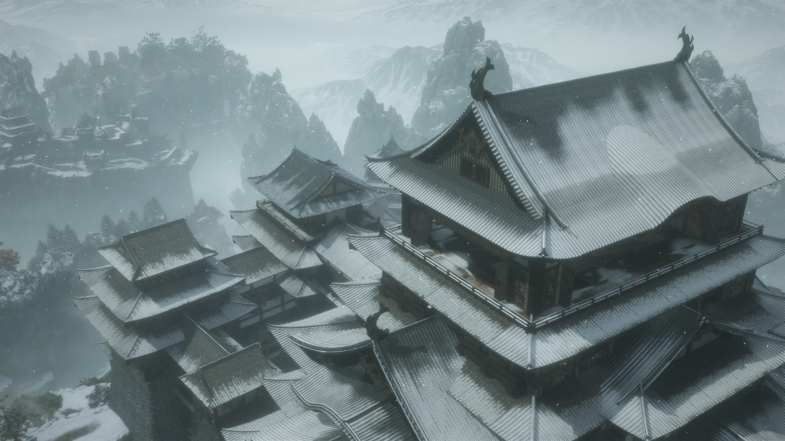
这是白雪覆盖之下的苇名城，颇具美感。
第一个感觉难残的boss是赤鬼，但凡多贪一刀就很容易被抓住干掉，同时如果不知道红颜怪怕火这个特点，那么只能跟它一来一回磨血量了。后面双难模式下打赤鬼，虽然被抓到就是秒杀，但是如果使用火刀，反而轻而易举地可以拿下赤鬼。和赤鬼的战斗十分刺激，也十分绝望，当时花了不少时间，在一次又一次的死亡中，吸取教训，提高熟练度，最终战胜强敌。
之后打完赤鬼往前走，在悬崖峭壁之间，我初遇白蛇，开始真正被这个游戏所吸引：
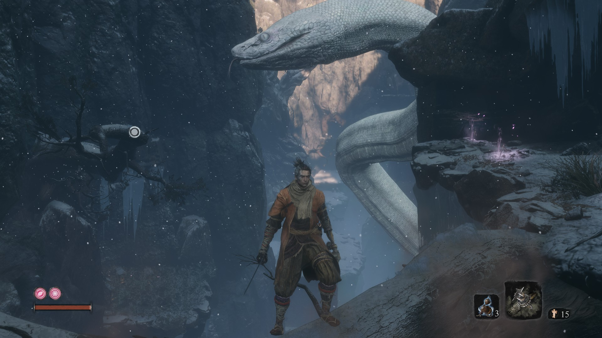
这是一条巨大无比的白蛇，据考证应该是一条双头蛇，要么就是有两条这样的蛇，因为后期忍杀了一条后，还能发现在洞窟里发现另一个蛇头在动。它曾经是当地人信仰的白蛇神。遇见这条蛇时，我欣赏了许久（也挂了不少次=_=），颇有趣味，感觉来到了一个奇异的世界。
对战义父，父慈子孝。选择了保护神子，坚持自己的信念，就必须和义父反目成仇。此时的天守阁正是黄昏时刻，一场艰苦卓绝的战斗即将开始：
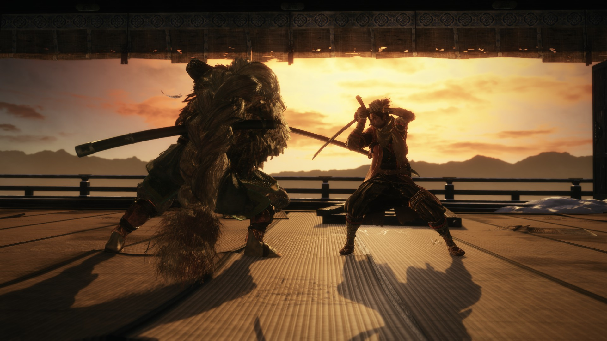
这是一场无比艰难的战斗。义父的攻击时快时慢，各种招数层出不穷。他的韧性很高，想把他逼入绝境，必须不断地进攻。
最后，狼是从背后忍杀了义父，留下一句“落影，物归原主”，取回落樱。而同时也是狼还给义父的一刀，还的是三年前义父背刺狼的那一刀。
在前往狮子猿所在地的路上，悬崖绝壁之间，筑有许多巨大佛雕，额外有意思，也令人生畏：
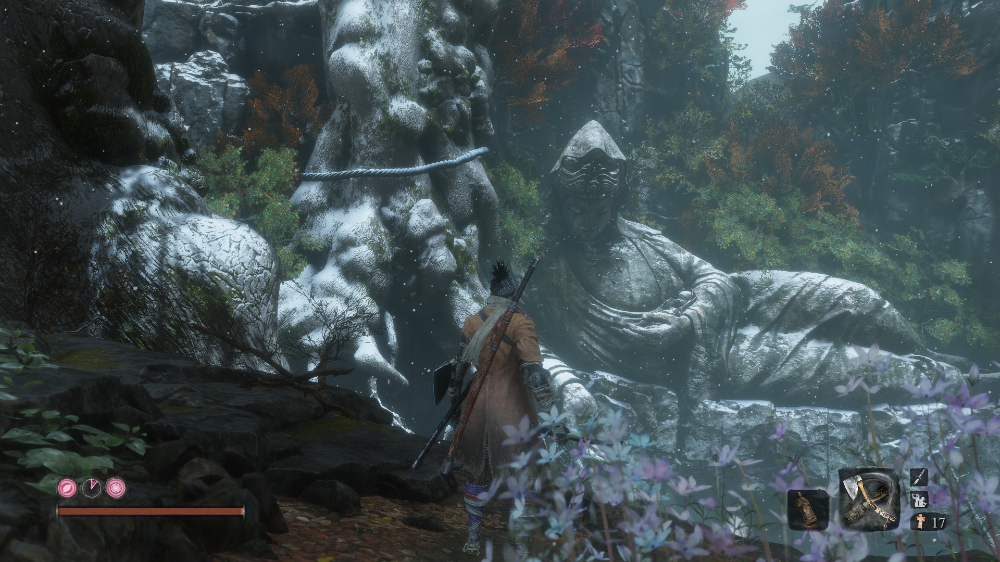
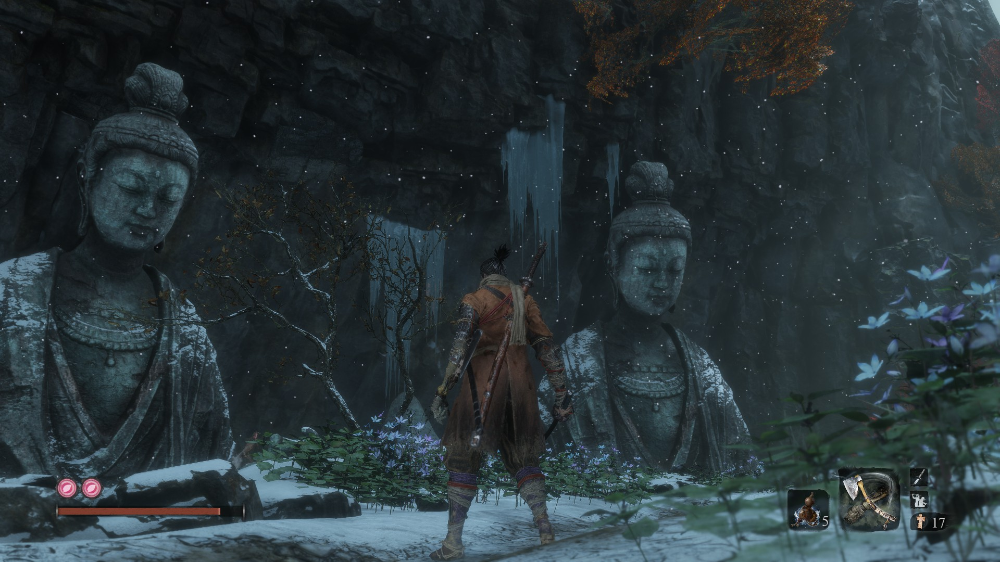
置身源之宫，如梦如画。满湖落樱，清水如镜。第一次来时的确感觉来到了世外桃源。但是后来慢慢深入内部，才发现这华美的景象背后潜藏着多么丑陋的东西……
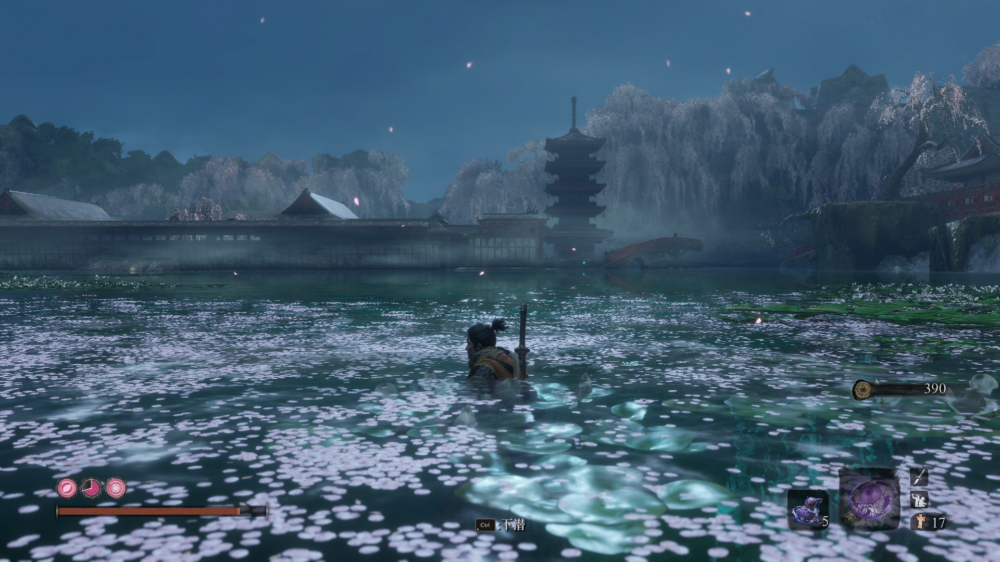
初见樱龙，气势凌人，这虽然只是一场表演战，但是还是特别有意思。第一次见的时候完全被樱龙的气势震撼到：
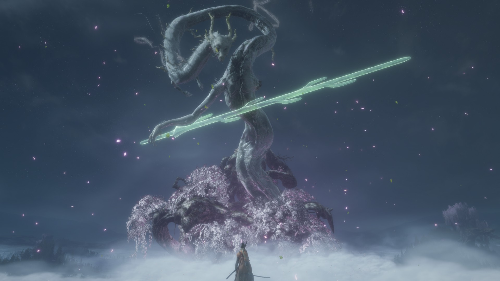
拿到龙泪后，便回到苇名城，准备最后的对决了。此时的苇名城已经混乱不堪，战斗愈演愈烈。
最后对战剑圣苇名一心。它无疑是只狼中难度仅次于怨恨之鬼的boss了。但在一周目时感觉和义父也五五开吧，在双难模式下就比义父难多了。
第一次遇见一心，很难不为他的剑圣风范所震慑到：
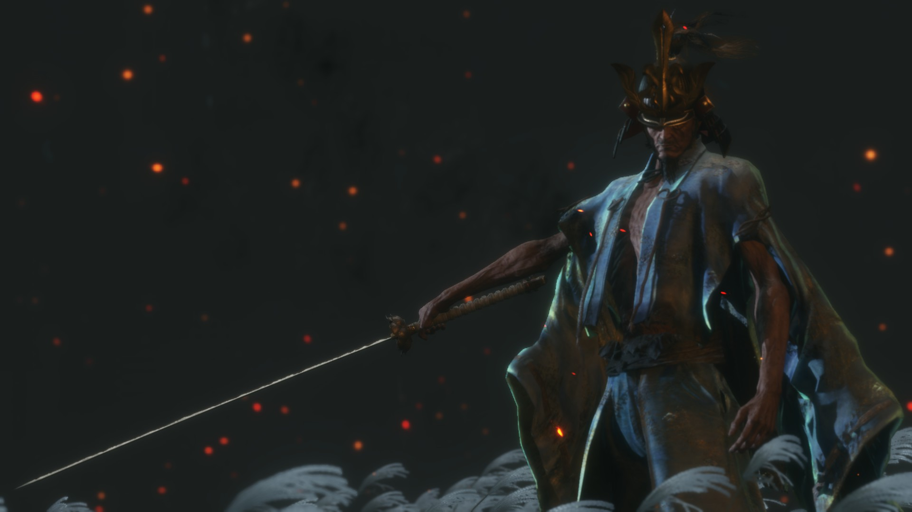
最后作为介错人处死一心，也能感受到他无比的剑圣气质。
在三周目尝试堕为修罗，这的确算是是最坏的结局，狼最后甚至把义父也杀了……在高周目玩了一次这个结局，感觉没有动力在玩一次修罗结局了。
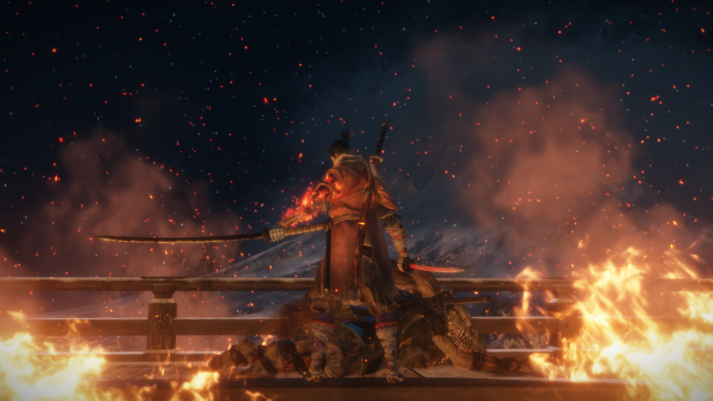
于火光中结束一切……
个人最满意的结局，也是官方指定结局，龙之还乡：
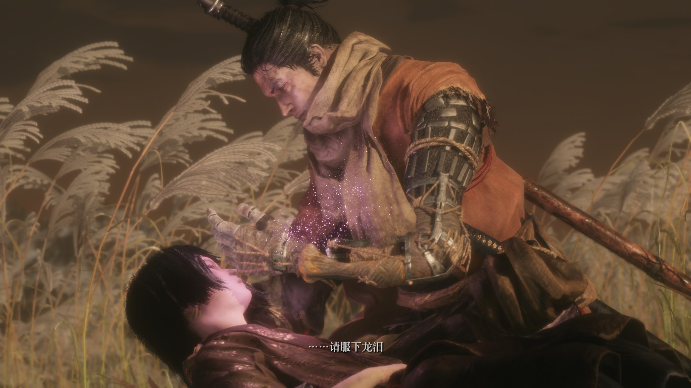
狼和皇子都活了下来，和神子一道前往西方，送还樱龙，断绝不死之诅咒，走向新的征程：
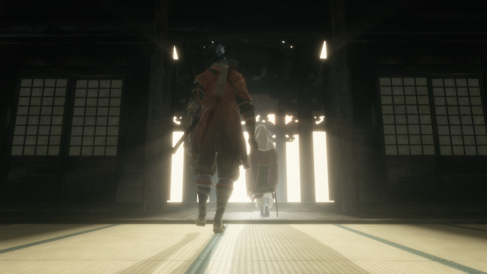
到此结束。感谢fs社给我带来的这一段珍贵的经历！